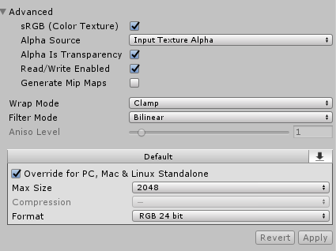
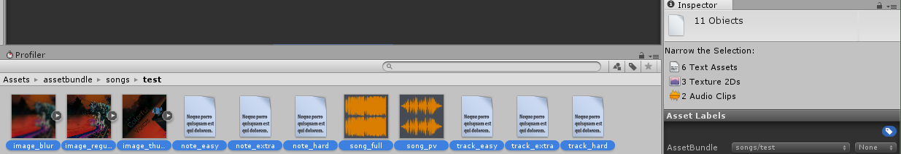
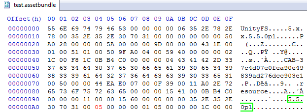

Exporting Songs to the Nintendo Switch
What you will need
- Unity 5.5.0p1
- A Hex Editor
- A Nintendo Switch with a CFW running LayeredFS
- VOEZ for the Nintendo Switch (obviously)
- Your project files outputted by the Song Editor
Setting up the Asset Bundler
Create a new 2D Unity project. In the Project window, add the following three folders to your project's Assets:- assetbundle
- AssetBundles
- Editor
using UnityEditor;
public class CreateAssetBundles {
[MenuItem("Assets/Build AssetBundles")]
static void BuildAllAssetBundles()
{
BuildPipeline.BuildAssetBundles("Assets/AssetBundles", BuildAssetBundleOptions.UncompressedAssetBundle, BuildTarget.StandaloneWindows);
}
}
That's it. This is a one-time setup, and you can reuse this Unity Project from now on for exporting any future tracks that you create.
Bundling a Track Mod
Create a new folder for your song inside of the assetbundle/songs folder. The name of this folder can be anything, though keep it all lowercase, no spaces, no special characters, just letters and numbers. Remember the name of the folder because you will need to reuse it several times later.Populate this new folder with your project files. It should contain all of the following files, named and formatted exactly as described:
- image_regular.png: A 1024x1024 background image for your song.
- image_blur.png: The same image as above, resized to 256x256, and blurred.
- image_thumbnail.png: A 256x256 image used for the icon thumbnail in the song select menu.
- song_full.mp3: The full music track for your song.
- song_pv.mp3: A preview music track for your song, exactly 20 seconds long, for use in the song select menu.
- note_easy.json: Notes definitions for your song, exported by the Song Editor. For Easy mode.
- note_hard.json: Notes definitions for your song, exported by the Song Editor. For Hard mode.
- note_extra.json: Notes definitions for your song, exported by the Song Editor. For Special mode.
- track_easy.json: Tracks definitions for your song, exported by the Song Editor. For Easy mode.
- track_hard.json: Tracks definitions for your song, exported by the Song Editor. For Hard mode.
- track_extra.json: Tracks definitions for your song, exported by the Song Editor. For Special mode.
For the image_blur file, change the import settings in the Inspector to match the following (otherwise the blurred image will look pixelated in-game):

For all other files, the import settings can be left as the defaults.
Once all of the project files are there, select all of them in the Project window, and at the bottom of the Inspector, you will see a dropdown called "AssetBundle". From that dropdown box, select New..., then name the new AssetBundle songs/XXXX, where XXXX is the same name as the folder you created for your project files.
Once everything is done succesfully, your setup should be looking something like this:

From the menu options at the top of the Unity Window, select "Assets > Build AssetBundles". Once this process finishes running, the bundle for your project files will be available in the AssetBundles/songs folder. The bundle file is the one that's named the same as the project folder you created. It won't have any file extension, so rename it to add the extention ".assetbundle" onto the file. Then open the file up in your hex editor:

You want to look for the part of the file that has the second occurance of the unity version number (5.5.0p1, highlighted in green in the image above), and find the value located two bytes after the version number (0x05, highlighted in red in the image above). Change that value from 05 to 26. Then save the file.
All done. Your project is bundled and ready to be put onto the Nintendo Switch.
Deploying the Track Mod
In your titles folder for LayeredFS on the microSD card for your Switch, create the following directory structure:0100A7F002830000/romfs/Data/StreamingAssets/songs2.0
The 2.0 at the end of the folder name denotes the version number that your songs will be categorized under if you sort by version in the game's song menu. It helps to have all your custom songs in their own category so you can find them easily. You can change that number to something else, but just don't use one of the actual version numbers from the original game, otherwise you'll overwrite the entire song list for that version.
Inside that songs folder, place the .assetbundle file you bundled for your project. Additionally, in that folder you need to have a song_asset_list.json file. That is a listing of all the songs that will be listed under that version category. Click here to download an example song_asset_list.json file to use as your base.
Open the song_asset_list.json file in a text editor, and add your new song as an entry in the list. The song_asset_list.json file downloaded above has two placeholder entries in it, just to illustrate the format and structure of the file. You should remove/replace those with your song(s). Your entry should look like:
{
"info": {
"author": "Song Author",
"bpm": 120,
"id": "XXXX",
"name": "Song Name"
},
"level": {
"hard": 7,
"easy": 1,
"extra": 10
}
}
That's it. Now start-up/restart VOEZ on your Switch with LayeredFS, and you should find your song in the songs list.
Tip: Install ftpd on your Switch, and use a FTP client like WinSCP or Filezilla on your computer. With those, you can transfer files to the MicroSD card on your Switch over Wi-Fi, instead of having to turn off the console and eject the card every time you want to add/modify the files.